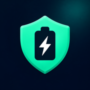

Version 1.0.0 for Dopamine rootless on iOS 17. Battery diagnostics, historical charts and configurable charging reminders. The app labels estimates and identifies unavailable readings.
راقب البطارية والحرارة، واختر نسبة التنبيه أثناء الشحن. يمكنك تفعيل المراقبة في الخلفية وتخصيص أوضاع الطاقة من التطبيق.